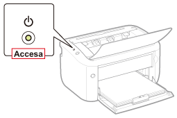
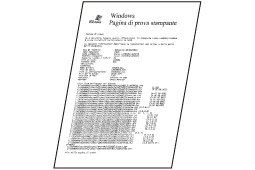
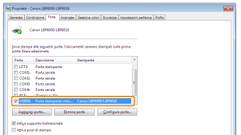
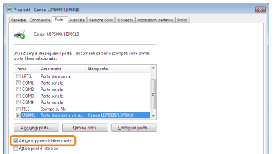

Se la stampante è collegata tramite USB e non si riesce a stampare, consultare le domande riportate di seguito per individuare il problema.
<Domanda 1> La stampante è accesa? (La spia  (Alimentazione) è accesa?)
(Alimentazione) è accesa?)
(Alimentazione) è accesa?)
|
Accesa
|
Vai alla <Domanda 2>
|
|
Spenta
|
Accendere la stampante.
|
|
La stampante non si accende
|
<Domanda 2> La spia  (Carta) lampeggia?
(Carta) lampeggia?
(Carta) lampeggia?
|
Lampeggiante
|
Caricare correttamente la carta e poi premere il tasto [
 ] (Carta). ] (Carta). |
|
Non lampeggiante
|
Vai alla <Domanda 3>
|
<Domanda 3> Il cavo USB è collegato correttamente?

|
Collegato
|
Provare con la misura seguente.
Se si utilizza un hub, collegare direttamente la stampante al computer.
Se si utilizza un cavo USB lungo, sostituirlo con uno più corto.
Se si dispone di un altro cavo USB, utilizzare quest'ultimo.
 Se la stampa non viene eseguita, procedere dalla <Domanda 4>. |
|
Non collegato
|
Collegare correttamente il cavo.
|
<Domanda 4> Si riesce a stampare una pagina di prova in Windows?

|
Si riesce a stampare
|
Non c'è un problema con la stampante o il driver.
Controllare le preferenze di stampa nell'applicazione.
|
|
Non si riesce a stampare
|
Vai alla <Domanda 5>
|
<Domanda 5> La porta da utilizzare è selezionata correttamente?

|
Selezionata
|
Vai alla <Domanda 6>
|
|
Non selezionata
|
Selezionare la porta giusta.
|
|
Non è possibile trovare la porta utilizzata.
|
Installare nuovamente il driver della stampante.
|
<Domanda 6> È attivata la comunicazione bidirezionale?

|
Attivata
|
Vai alla <Domanda 7>
|
|
Non attivata
|
Attivare la comunicazione bidirezionale e riavviare il computer e la stampante.
|
<Domanda 7> Provare con le operazioni seguenti.
Disabilitare il software residente, incluso quello di sicurezza.
Se al computer sono collegati altri dispositivi tramite USB, scollegare quelli non necessari.
Se sul computer sono installati altri driver o software di altri dispositivi collegati via USB, disinstallare quelli non necessari.
Collegare il cavo USB a un'altra porta USB del computer.
Collegare la stampante a un altro computer utilizzando un cavo USB.
Se la stampa non funziona procedere dalla <Domanda 8>.
<Domanda 8> Installare nuovamente il driver della stampante.
Se la stampa non funziona procedere dalla <Domanda 9>.
<Domanda 9> Disinstallare il driver di classe USB e reinstallare il driver della stampante.
Se la stampa non funziona, rivolgersi al rivenditore autorizzato Canon locale.